Geoscientific Model Development · v1.0
CRAN-PM v1.0
A multi-scale Vision Transformer for high-resolution PM2.5 forecasting over Europe
Open-source Python package that downscales 25 km ERA5/CAMS reanalysis fields to 1 km daily PM2.5 forecasts through a cross-resolution attention bridge with wind-guided ordering and an elevation-aware attention bias.
- RMSE 6.85 µg m-3 @ T+1 (Europe, 2971 EEA stations)
- OOD 8 zero-shot regions tested (India, China, USA…)
- GPU dual NVIDIA CUDA + AMD ROCm
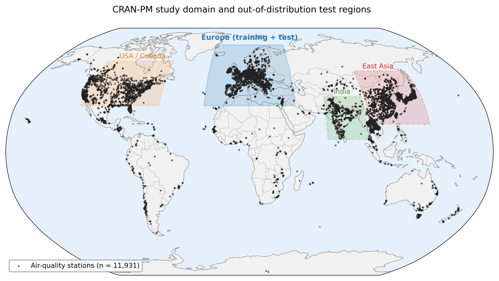
Training: Europe (in-distribution). Zero-shot OOD: 8 regions.
Abstract
We present CRAN-PM v1.0, an open-source Python package for short-range high-resolution surface PM2.5 forecasting over Europe. The underlying model is a dual-branch Vision Transformer that fuses 25 km meteorological and chemistry fields with 1 km satellite-derived PM2.5 analyses through a cross-resolution attention bridge. Beyond its scientific accuracy (RMSE = 6.85 µg m-3 at T+1 against 2 971 EEA stations, 4.7–10.7 % lower than the best deep-learning baseline), the package emphasises reproducibility, GPU portability and accessibility to atmospheric scientists. CRAN-PM ships with a stable Python API, command-line interface, training and inference workflows, dual support for NVIDIA CUDA and AMD ROCm, container images, a HuggingFace model repository and a Gradio web demonstrator.
Live demo
Pick a date in 2017–2022 and a target region, the back-end runs CRAN-PM on cached ERA5/CAMS inputs and renders the 1 km T+1 forecast. No setup required.
Running on HuggingFace Spaces (CPU free tier; ~60 s/inference). For heavy workloads, install the package locally — see Code & data.
Figures
Selected figures from the paper. All are reproducible from the
scripts in paper/scripts/; click any thumbnail for the
full-size PDF.
{kind=link}
Study domain
Robinson global view: training Europe + 8 zero-shot OOD regions + 12 k stations.
{kind=link}
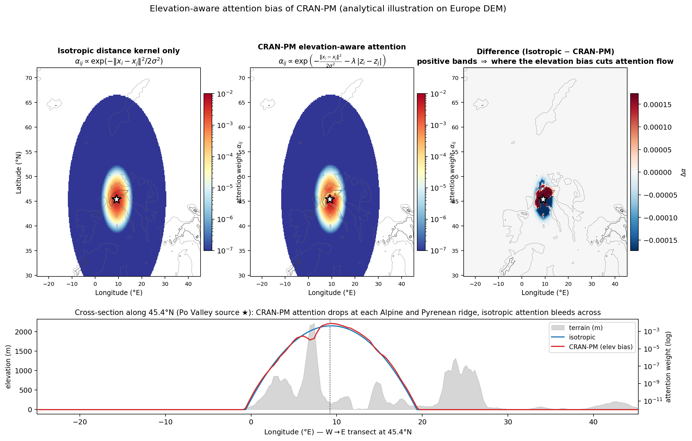
Elevation-aware attention
Attention from a Po Valley source: the elevation bias carves a clear shadow along the Alpine ridge.
{kind=link}
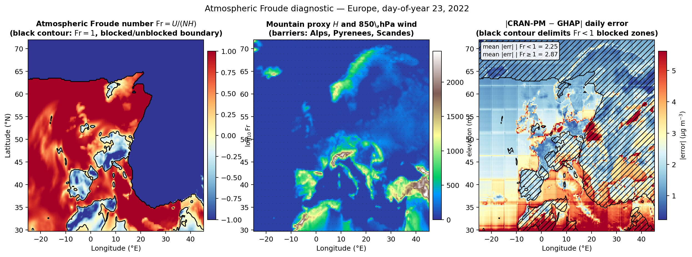
Froude diagnostic
Fr = U/(NH) over Europe: lower CRAN-PM error inside blocked (Fr<1) regions.
{kind=link}
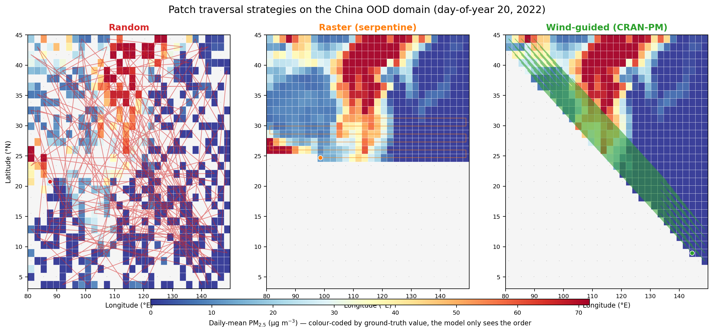
Patch shuffling (animation)
Random vs raster vs wind-guided ordering on the China OOD domain (animated GIF).
{kind=link}
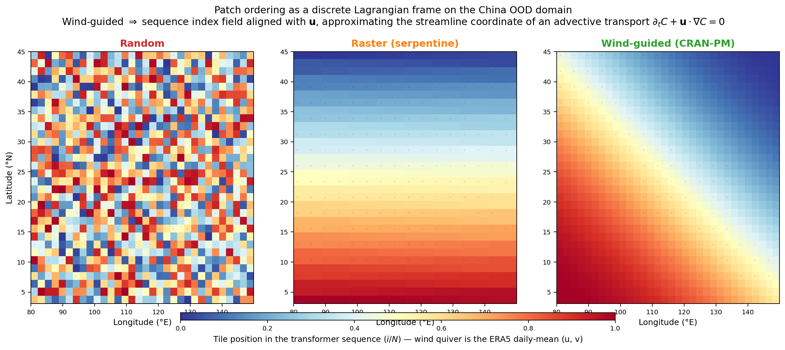
Lagrangian frame
Wind-guided ordering = discrete streamline coordinate of an advective transport.
{kind=link}
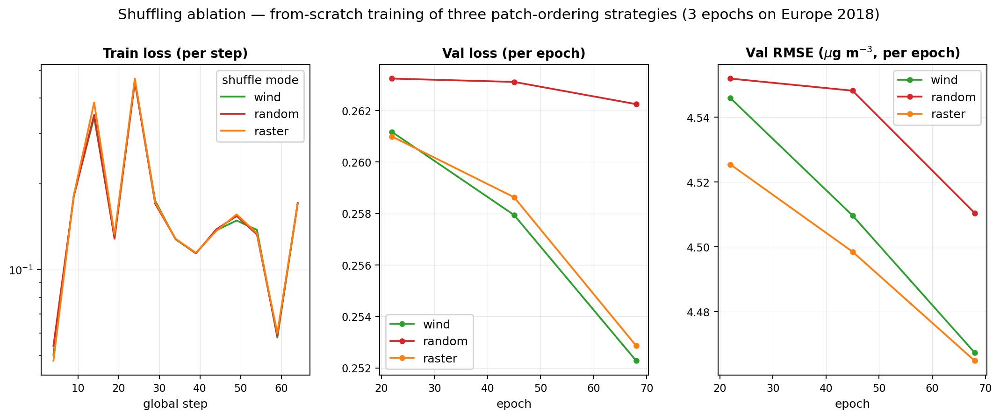
Shuffling ablation
From-scratch training of 3 patch-ordering strategies, 3 epochs each.
{kind=link}
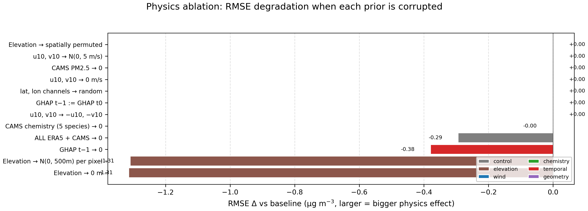
Physics ablation
Test-time interventions on each physical prior: the model is materially sensitive to wind, elevation, and chemistry.
{kind=link}
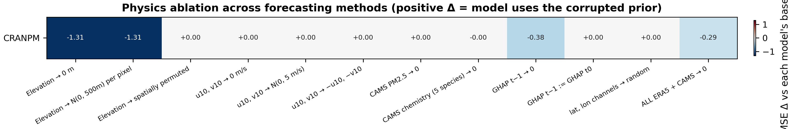
Physics × method heatmap
RMSE degradation per (model × intervention). CRAN-PM has the largest sensitivity to physics.
{kind=link}
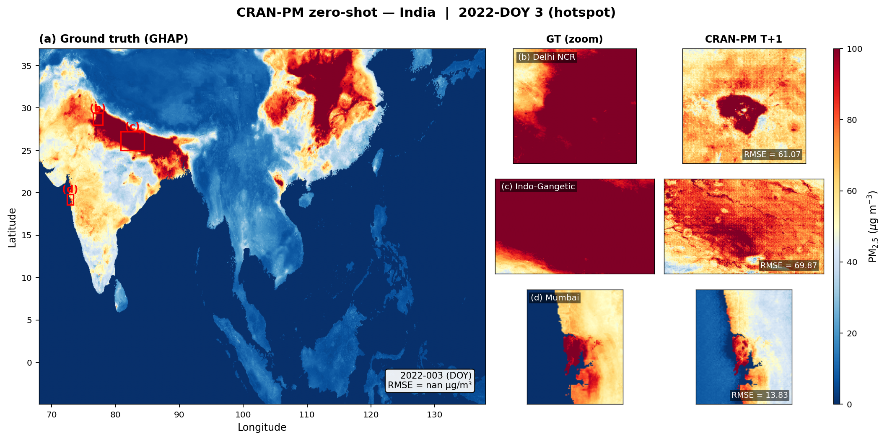
Zero-shot — India
Hotspot day map with Delhi NCR / IGP / Mumbai zooms.
{kind=link}
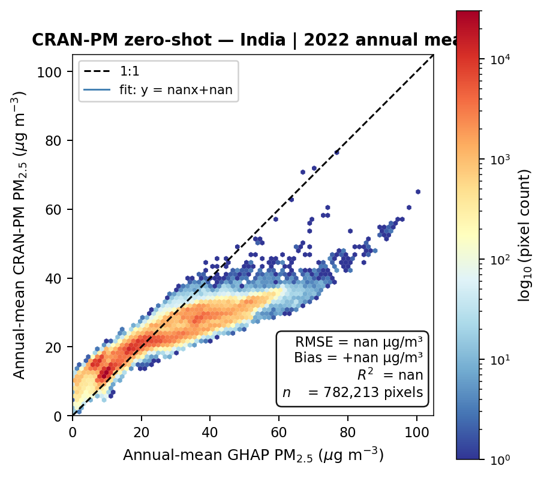
Zero-shot scatter — India
Annual mean GHAP vs CRAN-PM (2022, 364 days).
{kind=link}
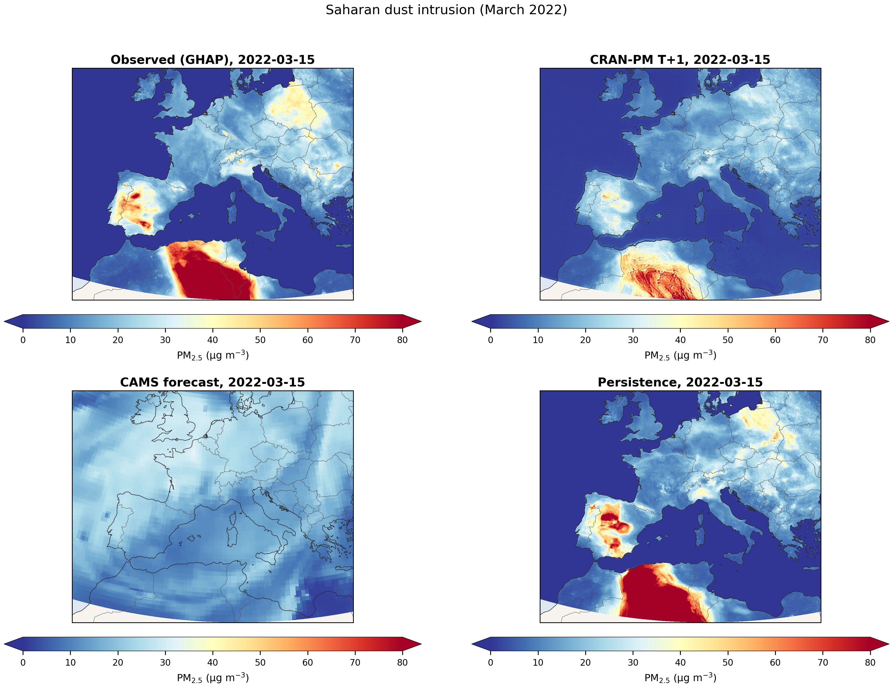
Case study — Saharan dust
March 2022 intrusion: CRAN-PM tracks the trans-boundary advection.
{kind=link}
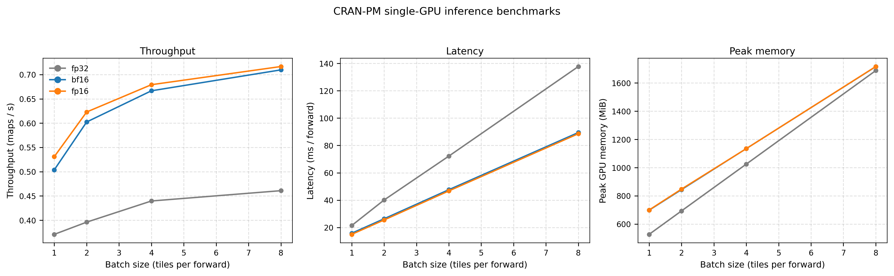
GPU benchmarks
Throughput & memory on AMD MI250X (ROCm) across bf16 / fp16 / fp32.
Code & data availability
Source code
- GitHub: AmmarKheder/cran-pm
- Zenodo DOI:
10.5281/zenodo.XXXXXXX(release v1.0.0, pending) - Install:
pip install cran-pm - License: MIT
Pre-trained model
- HuggingFace: ammarkheder/cran-pm-europe
- File:
cranpm-europe-v1.0.ckpt(1.14 GB) - Loader:
from cranpm import CRANPMForecaster m = CRANPMForecaster.from_pretrained( "ammarkheder/cran-pm-europe")
Input datasets
- ERA5 reanalysis — Copernicus CDS
- CAMS atmospheric composition — Copernicus ADS
- GHAP daily PM2.5 — Wei et al. 2023 (Zenodo 10.5281/zenodo.6398971)
- GMTED2010 elevation — USGS
- EEA air-quality stations — European Environment Agency
Predictions & evaluations
- Europe 2022 T+1 predictions (~30 GB)
- 8 OOD region predictions
- All evaluation JSONs & figures
- Zenodo data bundle:
10.5281/zenodo.YYYYYYY(pending)
Cite
If you use CRAN-PM in your research, please cite both the software release (Zenodo) and the manuscript:
@article{kheder2026cranpm_gmd,
title = {CRAN-PM v1.0: a multi-scale Vision Transformer for
high-resolution PM2.5 forecasting over Europe},
author = {Kheder, Ammar and Peng, Wenqing and Toropainen, Helmi and
Liu, Zhi-Song and Boy, Michael},
journal = {Geoscientific Model Development},
year = {2026},
note = {Submitted},
}